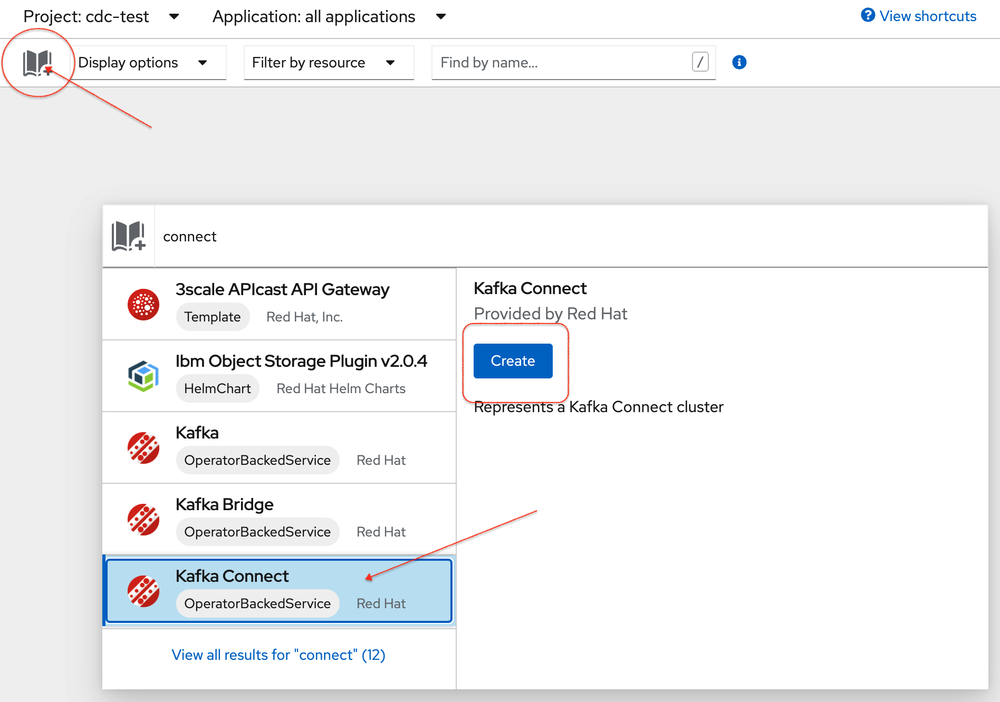
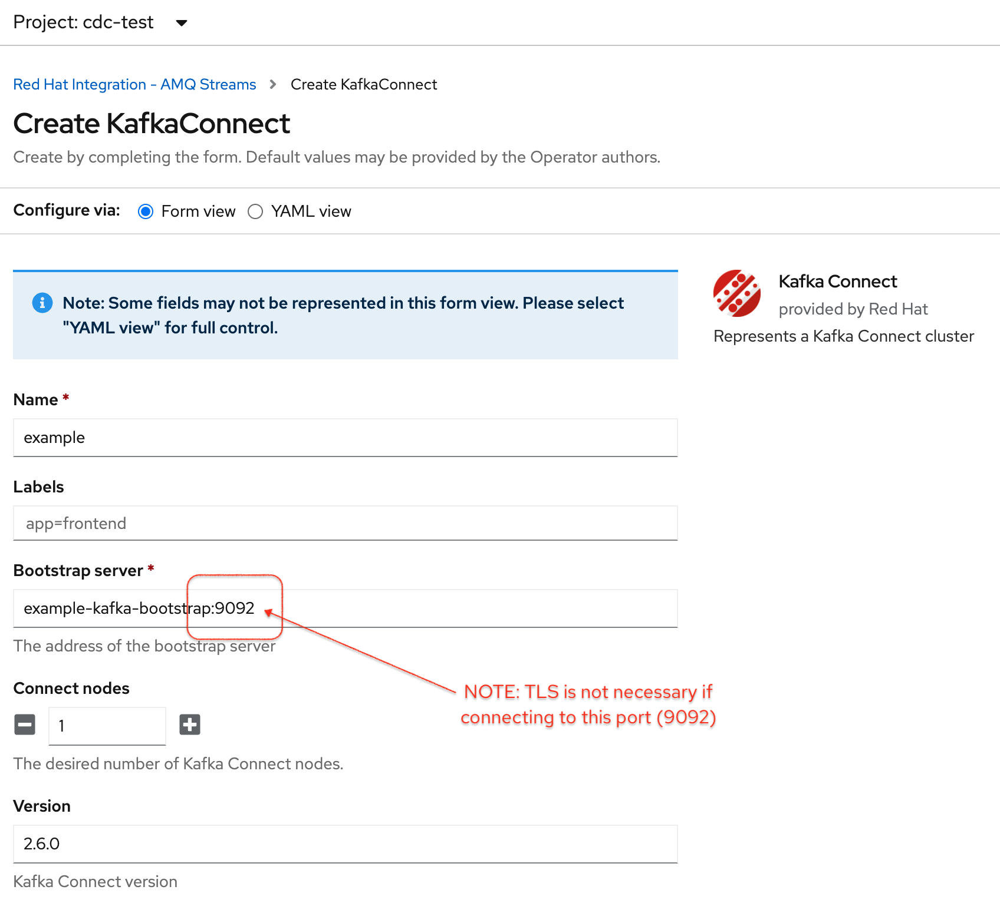
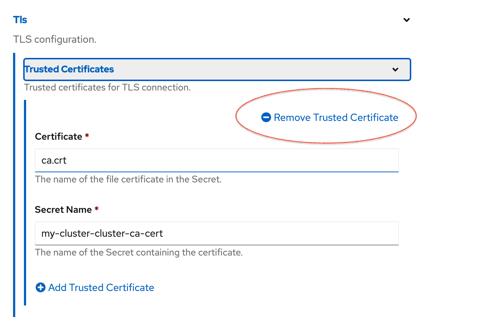
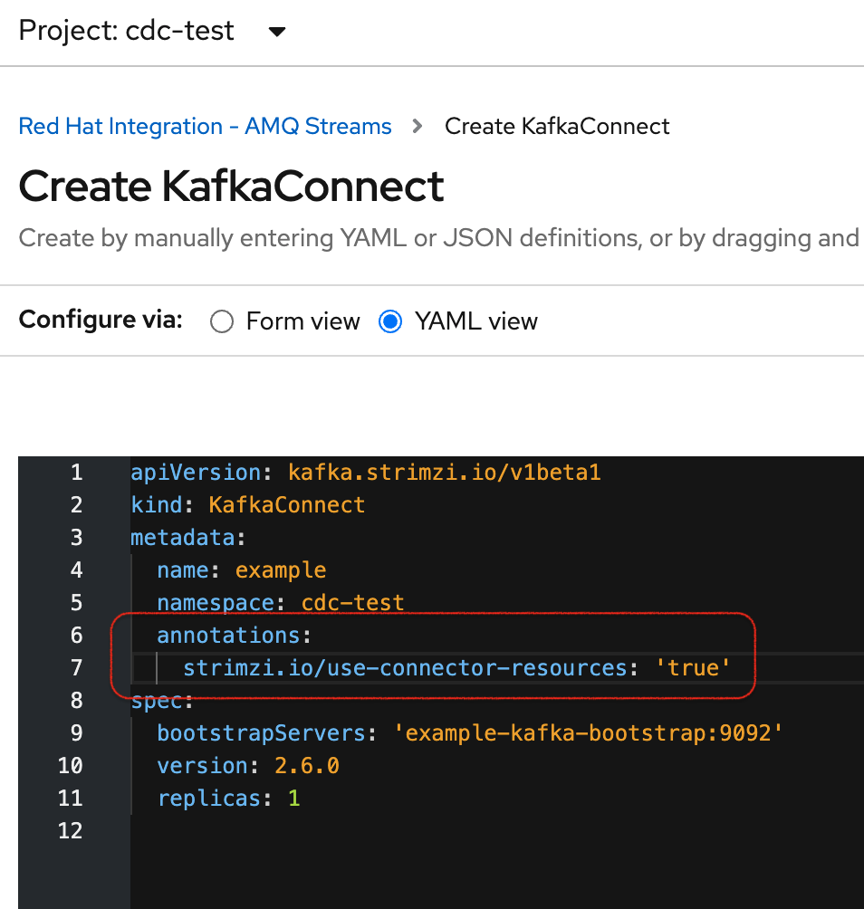
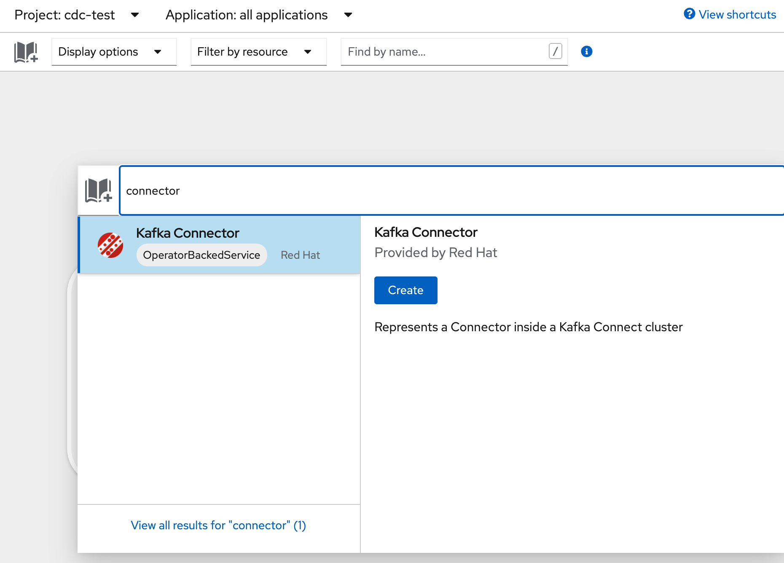
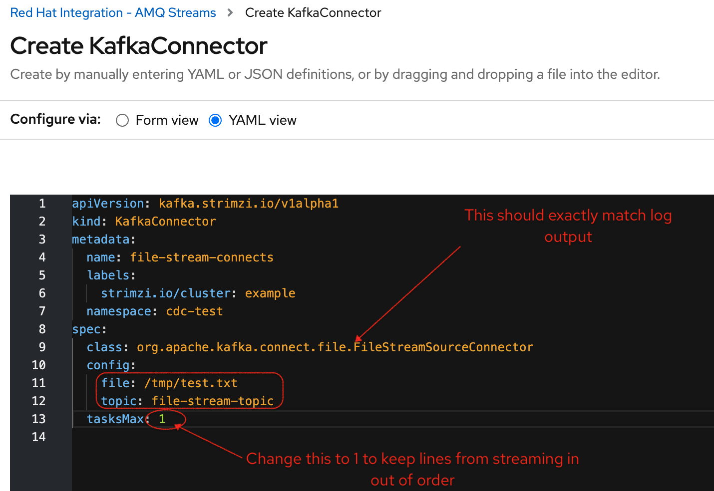
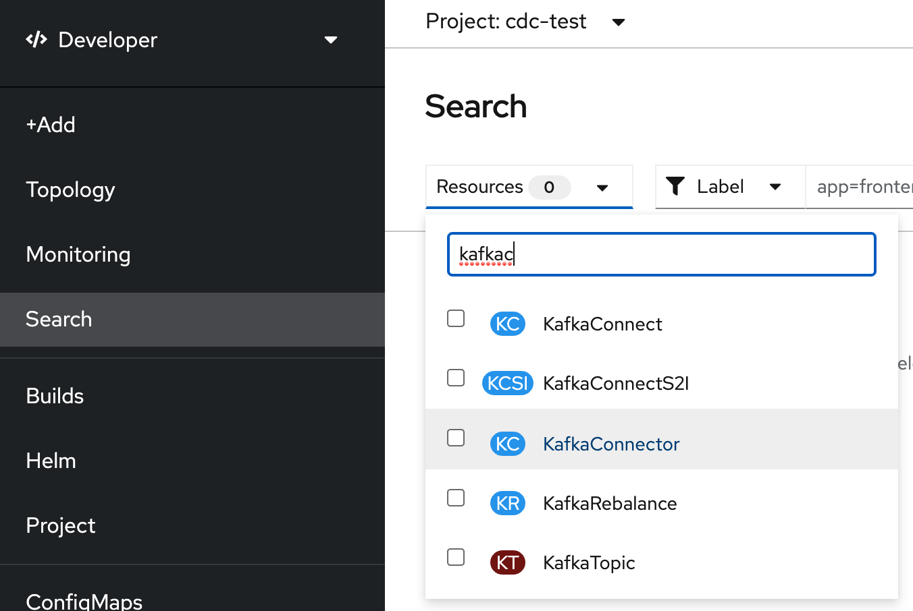
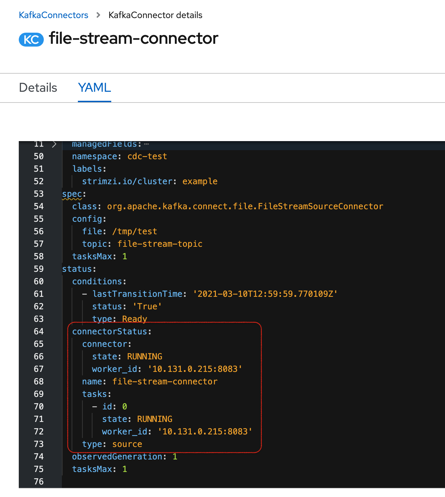

Demo Walkthrough
Kafka Connect Introduction
|
This section assumes you have setup a kafka cluster in |
-
Go to the
cdc-sandboxproject, Developer PerspectiveThe examplekafka cluster should be fully running now -
Before doing anything, pick a shell and run the following
sterncommand which we’ll use to look at the plugins on the Connect instance -
Click the book with the plus (
Quick Catalog Add) and typeConnectin the text box and then clickCreate
-
Then fill in the kafka connect form view per below being extra careful to remove the tls certs and *add the annotation in YAML
 
-
Switch to YAML view and make sure to add the following annotation:
annotations: strimzi.io/use-connector-resources: 'true' -
Finally click
Createto create the KakfaConnect -
After a few moments you should see the following in the
sternshell (Terminal 1)+ example-connect-7856c88cf-mthmb › example-connect example-connect-7856c88cf-mthmb example-connect 2021-03-10 12:05:05,423 INFO Added plugin 'org.apache.kafka.connect.mirror.MirrorSourceConnector' (org.apache.kafka.connect.runtime.isolation.DelegatingClassLoader) [main] example-connect-7856c88cf-mthmb example-connect 2021-03-10 12:05:05,423 INFO Added plugin 'org.apache.kafka.connect.file.FileStreamSinkConnector' (org.apache.kafka.connect.runtime.isolation.DelegatingClassLoader) [main] example-connect-7856c88cf-mthmb example-connect 2021-03-10 12:05:05,424 INFO Added plugin 'org.apache.kafka.connect.tools.MockSourceConnector' (org.apache.kafka.connect.runtime.isolation.DelegatingClassLoader) [main] example-connect-7856c88cf-mthmb example-connect 2021-03-10 12:05:05,424 INFO Added plugin 'org.apache.kafka.connect.tools.SchemaSourceConnector' (org.apache.kafka.connect.runtime.isolation.DelegatingClassLoader) [main] #example-connect-7856c88cf-mthmb example-connect 2021-03-10 12:05:05,424 INFO Added plugin 'org.apache.kafka.connect.file.FileStreamSourceConnector' (org.apache.kafka.connect.runtime.isolation.DelegatingClassLoader) [main]# ... NoneConnectorClientConfigOverridePolicy' (org.apache.kafka.connect.runtime.isolation.DelegatingClassLoader) [main]
-
Then, make the following two terminals visible and run the commands therein:
Here we will remote to the connect instance
oc rsh -n cdc-sandbox deploy/example-connectOnce connected, run the following in the pod:
cd /tmp echo "Line 1" >> test.txtHere we will look to receive any updates on the topic that the file will be streaming to
oc exec -it example-kafka-0 -n cdc-sandbox -- bin/kafka-console-consumer.sh --bootstrap-server localhost:9092 --topic file-stream-topic --from-beginning -
Next, use the
Quick Add Catalogbutton to create a newKafka Connector
-
Switch to
YAML View -
Show that the name of the connector matches the Plugin log output from Terminal 1
-
org.apache.kafka.connect.file.FileStreamSourceConnector
-
-
Update the YAML as follows:
-
Make sure the topic matches what is being consumed in Terminal 3
-
Make sure the file matches what was just created in the
rshon Terminal 2
-
-
A few moments later, you should then see the following in Terminal 3
{"schema":{"type":"string","optional":false},"payload":"Line 1"} -
Click
Searchand then start typingkafkaconnnectand selectKafkaConnectorfrom the drop-down
-
Click on the
file-stream-connectorand then the YAML viewAlternatively, you can following command in Terminal 2 (rsh)
curl localhost:8083/connectors/file-stream-connector/status -
Next let’s pump some text through the file
-
This should cause lines like the following to appear every 2 seconds in Terminal 3
{"schema":{"type":"string","optional":false},"payload":"Line 2"} {"schema":{"type":"string","optional":false},"payload":"Line 3"} {"schema":{"type":"string","optional":false},"payload":"Line 4"} {"schema":{"type":"string","optional":false},"payload":"Line 5"} {"schema":{"type":"string","optional":false},"payload":"Line 6"} {"schema":{"type":"string","optional":false},"payload":"Line 7"} {"schema":{"type":"string","optional":false},"payload":"Line 8"} {"schema":{"type":"string","optional":false},"payload":"Line 9"} {"schema":{"type":"string","optional":false},"payload":"Line 10"} -
Delete the kafkaconnector and then notice that eventually (when the amq operator catches up) the topic goes silent
-
Finally, you might consider returning to Terminal 2 to show that the writing to the file continued
-
This should yield output something like this:
Line 1 Line 2 Line 3 Line 4 Line 5 Line 6 Line 7 Line 8 Line 9 Line 10 Line 11 Line 12 Line 13 Line 14 Line 15 Line 16 Line 17 Line 18 Line 19 Line 20